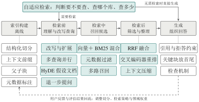

5.4 高级 RAG：优化检索的各个环节
如果说基础 RAG 解决的是“有没有资料”，那么怎样让资料找得更全、更准、更精简？本节先给出 RAG 五种形态的全景，再沿流水线把高级 RAG 的优化分为检索前（改写查询、改进索引）、检索中（混合检索与多路召回）、检索后（融合、重排、压缩）三类，最后介绍自适应检索与持续优化。结论是：高级 RAG 没有推翻基础流水线，而是在各环节做加法；每项技术只提升几个百分点，叠加起来效果显著。
5.4.1 RAG 的五种形态
早期综述把 RAG 归纳为基础 RAG、高级 RAG 与模块化 RAG 等范式[6]；结合近年的演进，实践中大致形成了五种形态，后一种针对前一种的短板（表 5-5）。它们不是“后者淘汰前者”的关系：大量生产系统仍以基础 RAG 为主，因为它成本最低、最可控；成熟系统往往是几种形态的组合。
表 5-5 RAG 的五种形态
| 形态 | 核心特点 | 代表技术 | 典型场景 | 主要局限 |
|---|---|---|---|---|
| 基础 RAG | 固定的“检索—生成”，静态向量检索 | 稠密向量检索、固定切分、top-\(k\) | 知识库问答、客服问答 | 依赖初始相似度，不能多步推理 |
| 高级 RAG | 优化检索质量 | 混合检索、查询改写、重排、压缩 | 复杂文档、垂直领域知识库 | 流程仍需人工设计 |
| GraphRAG | 结构化关系推理 | 实体抽取、知识图谱、社区摘要 | 多跳问答、全局综述、合规审计 | 构建成本高、更新难 |
| 推理 RAG | 边推理边检索，自我反思 | Self-RAG、CRAG、迭代检索、ReAct | 医疗辅助诊断、金融分析、代码调试 | 延迟高，可能陷入循环 |
| Agentic RAG | 智能体自主规划、调用工具 | 多智能体协作、MCP、深度研究 | 个人助手、科研探索、复杂决策 | 成本与可控性难平衡 |
表中出现的各项技术在本节和第 5.5、5.6 节中逐一解释。本节讨论高级 RAG，它的各项优化在流水线上的位置如图 5-3 所示。

图 5-3 高级 RAG 的优化点在流水线上的位置。浅蓝色框为本节重点讨论的检索前、检索中、检索后三类优化；上方是决定是否检索的旁路，下方虚线是持续改进的反馈回路
5.4.2 检索前：改写查询与改进索引
很多检索失败源于问题本身：用户说“这个怎么弄”，系统不知道“这个”指什么；用户说“报销”，没说是差旅还是招待；用户把三个问题揉成一句，检索只能顾此失彼。查询改写（query rewriting，也称查询转换）在检索之前让大模型先把问题改造成更适合检索的形式，输入是原始问题（和对话历史），输出是一个或多个新查询。常用手法有五种：
指代消解与补全：结合对话历史，把“这个怎么弄”补成“上个月购买的打印机如何申请保修”，即上下文感知的查询增强；
同义扩展：把“钱怎么退回来”扩展出“退款、退货、原路退回、到账时间”等词，跨过词汇鸿沟；
多查询并行：把一个问题改写成 3～5 个不同角度的版本分别检索，再合并去重，代价是检索次数和延迟成倍增加；
假设文档嵌入（Hypothetical Document Embeddings，HyDE）[11]：先让模型写一段“理想的答案文档”，再用这段假答案的向量去检索真实文档；
退一步提问（step-back prompting）[12]：先提一个更抽象的问题（如“RAG 检索有哪些优化方向”），拿到总体框架后再回到具体问题，适合问得太细反而找不到的情形。
HyDE 为什么有效？用户的问题通常很短，用词和句式都与文档不同；而模型写出的假答案虽然内容可能有错，用词、结构却与真实文档相似。在向量空间中，“答案找答案”比“问题找答案”更容易命中。HyDE 并不让模型替代答案，而是让模型描述“你想要的文档长什么样”；最终回答仍以检索到的真实文档为依据。
改写的是查询，改进的则是索引。前面介绍的结构化切分、父子块属于这一类，另一项代表性技术是 Anthropic 在 2024 年 9 月提出的上下文检索（Contextual Retrieval）[13]。它针对的问题是：块被孤立编码时缺少背景。例如某块写着“公司营收较上一季度增长 3%”，没说是哪家公司、哪个季度，嵌入模型只能把它编码成“一句关于增长的话”。做法是在入库前让一个较小的模型读整篇文档，为每个块生成一句说明其位置与背景的前缀（如“本段出自 ACME 公司 2023 年第二季度财报……”），把前缀与原块拼在一起再做嵌入和关键词索引。在其实验中，前 20 个结果的检索失败率（即 \(1-\text{Recall@}20\)）从 5.7% 降到 3.7%（相对降低 35%，绝对下降 2 个百分点）；再叠加同样加了前缀的 BM25 检索，降到 2.9%（相对基线降低 49%）；最后加重排，降到 1.9%（相对基线降低 67%）。
5.4.3 检索中：混合检索与多路召回
向量检索擅长“意思像”，关键词检索擅长“字面像”，两者正好互补。
关键词检索与 BM25 关键词检索为每个词建立倒排索引（inverted index）：记录每个词出现在哪些文档中。打分最常用的是 BM25[14]，它综合三个因素：查询词在文档中出现得多不多（词频，TF），这个词在整个语料中稀不稀有（逆文档频率，IDF），以及文档本身长不长。对查询 \(q\) 和文档 \(D\)， \[\mathrm{BM25}(q,D) = \sum_{t\in q} \mathrm{IDF}(t)\cdot \frac{f(t,D)\,(k_1+1)}{f(t,D)+k_1\left(1-b+b\cdot\dfrac{\lvert D\rvert}{\mathrm{avgdl}}\right)}, \tag{5-3}\] 其中 \(f(t,D)\) 是词 \(t\) 在 \(D\) 中的出现次数，\(\lvert D\rvert\) 是文档长度，\(\mathrm{avgdl}\) 是语料平均文档长度；\(k_1\)（常取 1.2～2.0）控制词频饱和的快慢，\(b\)（常取 0.75）控制长度归一化的强度，这里的 \(b\) 是 BM25 自带的参数，与全书表示位数的 \(b\) 无关。由于向量检索得到的是稠密向量（每一维都有值），BM25 对应的词频向量绝大多数维度为零，二者也常被称为稠密检索与稀疏检索。BM25 有两个向量检索比不了的优点：对专有名词、型号、编号极其敏感；可解释，能看到是哪个词命中了。例如用户搜索“错误码 TS-999”，嵌入模型可能找到一批泛泛讨论错误码的文档，BM25 则能精确捞出含该字符串的那一篇[13]；反过来，用户问“东西坏了怎么换”而文档写“退换货流程”时，BM25 无能为力，向量检索却能靠语义找到。
用 RRF 合并两路结果 混合检索（hybrid search）让向量检索和 BM25 各召回一批候选，再合并成一个列表。两路的原始分数量纲不同（余弦相似度在 \(-1\)～1 之间，BM25 分数没有固定上界，常见量级为几到几十），不能直接相加。最常用的合并方法是倒数排名融合（Reciprocal Rank Fusion，RRF）[15]：只看文档在各路列表中排第几， \[\mathrm{RRF}(d) = \sum_{r\in\mathcal{P}} \frac{1}{c+\mathrm{rank}_r(d)}, \tag{5-4}\] 其中 \(\mathcal{P}\) 是参与融合的各路检索列表的集合，\(\mathrm{rank}_r(d)\) 是文档 \(d\) 在列表 \(r\) 中的名次（从 1 开始；若 \(d\) 未在列表 \(r\) 中出现，则求和式中对应的分式项记 0），\(c\) 是平滑常数，原论文取 60（原文记作 \(k\)，此处改记 \(c\) 以免与返回条数 \(k\) 混淆）。\(c\) 越大，分母主要由 \(c\) 决定，不同名次的得分越接近，单独一路的头部名次就越难主导融合结果。RRF 简单、稳定、几乎无须调参，是工程上的默认选择。
例 5-4 用 RRF 合并两路检索结果
对问题“TS-999 报错如何处理”，向量检索返回的前 4 名依次为 D1、D2、D3、D4；BM25 返回的前 4 名依次为 D3、D1、D5、D2。取 \(c=60\)，求融合后的前 4 名。
| 文档 | 向量名次 | BM25 名次 | 算式 | RRF 分数 |
|---|---|---|---|---|
| D1 | 1 | 2 | \(1\div61+1\div62\) | \(0.016\,39+0.016\,13\approx0.032\,52\) |
| D3 | 3 | 1 | \(1\div63+1\div61\) | \(0.015\,87+0.016\,39\approx0.032\,27\) |
| D2 | 2 | 4 | \(1\div62+1\div64\) | \(0.016\,13+0.015\,63\approx0.031\,75\) |
| D5 | — | 3 | \(1\div63\) | \(0.015\,87\) |
| D4 | 4 | — | \(1\div64\) | \(0.015\,63\) |
表中分数均为先按分数的精确值相加、再四舍五入到 5 位小数的结果（各项分别取 5 位后相加，末位可能相差 1）。融合后前 4 名为 D1、D3、D2、D5。D5 只被 BM25 召回（例如它是唯一含“TS-999”字样的故障手册），向量检索没有找到它，但融合后它挤进了前 4 名，替换了只在向量列表中排第 4 的 D4。数据流向：两路列表 → 各自名次 → 按式 （5-4） 求和 → 重新排序。整个计算没有用到任何一路的原始分数。
多路召回与元数据过滤 再进一步，可以同时运行多路检索：一路向量、一路关键词、一路查图数据库中的关系（第 5.5 节），对图片、表格还可以加一路多模态检索，各路结果用 RRF 等方法合并。每一路都有自己的盲区，合在一起才更完整。此外，可以按元数据（日期、部门、文档类型、作者、地域）在检索前或检索时过滤候选，这称为元数据过滤（metadata filtering）：例如只检索“2026 年生效”“政策类型=退货”的文档。第 5.3.1 小节的退货/换货案例，正是靠元数据过滤修好的。
5.4.4 检索后：融合、重排与压缩
粗召回追求“不漏”，会捞回几十到上百个候选；检索后的工作是“不错”和“不吵”：挑出最相关的少数几个，并压缩到上下文放得下的长度。
重排 向量检索采用双编码器（bi-encoder，也称双塔）结构：问题和文档分别送进编码器得到两个向量，再算相似度。文档向量可以提前算好存起来，所以很快；但问题和文档在编码时互不可见，细粒度的对应关系会丢失。重排（reranking）通常采用交叉编码器（cross-encoder）[16]：把问题和一个候选文档拼接成一个输入，让模型在每一层注意力中逐词比对，直接输出一个相关性分数。它准确得多，但每个候选都要和问题一起完整运行一次模型，无法预先计算，只能用于少量候选。因此标准做法是两阶段：第一阶段用向量或混合检索快速召回 100～150 个候选，第二阶段用重排模型精选 10～20 个交给生成器。在 Anthropic 的实验中，重排把检索失败率从 2.9% 进一步降到 1.9%[13]，代价是每次查询增加几十到几百毫秒。重排模型有开源的 bge-reranker 系列，也有 Cohere Rerank 等商业服务；重排时还可以加入其他标准，例如用户偏好、文档新旧和来源权威性。对垂直领域，用自己标注的数据微调一个重排模型，往往比微调生成模型更划算。
辨析
双编码器与交叉编码器的区别不在于模型大小，而在于问题和文档是否在同一次前向计算中相互可见。双编码器“分别编码、再比距离”，文档向量可离线预计算，适合从海量文档中召回；交叉编码器“拼在一起、联合打分”，不能预计算，适合对少量候选精排。二者是先后配合的关系，不是互相替代。
两种融合 把多个检索结果“合起来”可以发生在两个位置。增强阶段的融合在把文档交给生成器之前完成：重排、过滤、合并、去重、聚合，RRF 与重排都属于此类，也是最简单有效的一类。生成阶段的融合则让生成器先分别处理每个检索文档，在生成最终回答时再综合它们的信息，例如 FiD（Fusion-in-Decoder）[17]把每个段落分别编码，在解码器中统一注意。前者对模型无要求，后者通常需要专门训练的模型。
上下文压缩 精选后的 10～20 个块加起来可能仍然太长，而且互相重复。上下文压缩（context compression）有两种做法：抽取式用一个小模型给每句话打相关性分数，只保留高分句，原文不改，引用可追溯；生成式让模型把多段材料改写成一段摘要，更短，但经过了“二次加工”，引用可能对不上原文。对可追溯性要求高的场景更常用抽取式。
压缩是上下文管理的一部分。所谓上下文，是模型处理当前输入时参考的全部信息；管理上下文的目标，是在不丢失必要知识的前提下，让检索到的信息不超过模型的输入限制。表 5-6 归纳了四种常用策略。
表 5-6 上下文管理的四种策略
| 策略 | 做法 | 作用位置 |
|---|---|---|
| 文档分块 | 把长文档切成合适粒度的块，只把相关块而非全文送入模型 | 索引构建 |
| 选择性检索 | 从大量相关文档中只保留最相关的部分，减少无关信息 | 检索后（重排、过滤） |
| 意图路由检索 | 判断查询意图，把查询路由到专门的检索器（如表格、图、代码检索） | 检索中 |
| 上下文摘要 | 用抽取式或生成式摘要浓缩检索内容，保留必要信息 | 检索后（压缩） |
5.4.5 自适应检索与持续优化
并不是所有问题都值得检索。用户说“你好”“谢谢”，或问“1 加 1 等于几”，检索纯属浪费，还可能引入干扰。自适应检索（adaptive retrieval）在检索之前加一个轻量的分类器或路由器，判断问题属于寒暄、常识还是需要外部知识；需要检索的，再决定查哪个库、查多少。这一分流能节省大量成本和延迟，第 5.6 节的 Self-RAG 把这一判断交给模型自己完成。
此外还有三类优化。针对具体领域的优化：在医疗、金融等领域，为特定字段设置检索权重，或用领域数据微调嵌入模型与重排模型。带反馈回路的持续优化：收集用户的点击、采纳、纠正和追问，定期回流到评估集和检索策略中，让系统随时间改进。语义哈希（semantic hashing）[18]：把文档编码为紧凑的二进制向量，用汉明距离（两个二进制串不同位的个数）快速比较，以少量精度换取速度和存储，适合高并发场景（参见例 5-2）。表 5-7 汇总了常用的检索优化方法。
表 5-7 常用的检索优化方法
| 方法 | 做法 | 本章位置 |
|---|---|---|
| 混合搜索与重排 | 结合稀疏（关键词）与稠密（嵌入）检索获取候选，再重排，优先保留最符合查询意图的结果 | 5.4.3、5.4.4 |
| 查询转换 | 用同义词、改述、子问题等扩展或改写查询，提高检索到高质量上下文的机会 | 5.4.2 |
| 元数据过滤 | 按日期、地点、作者等元数据过滤，使所选内容贴近用户需求 | 5.4.3 |
| 针对具体领域的优化 | 领域加权，或用专门数据集微调检索模型 | 本小节 |
| 带反馈回路的持续优化 | 用用户反馈迭代改进检索结果，适应偏好变化 | 本小节 |
| 语义哈希 | 把文档编码为紧凑二进制向量，快速做相似性检索 | 本小节 |
把本节的技术串起来，就得到一条高级流水线：自适应路由 → 查询改写 → 多路召回（向量＋BM25＋元数据过滤）→ RRF 融合去重 → 重排 → 压缩 → 生成与检查。用图书馆打比方，这是把只会按索书号找书的实习生，训练成会追问需求、会同时翻目录和书架、会挑出最该看的几页的老馆员。
本节要点
检索前改查询（改写、HyDE、退一步）和改索引（上下文前缀、父子块）；检索中用混合检索与多路召回补盲区；检索后用 RRF 融合、交叉编码器重排、压缩控制噪声与长度。
RRF 只用名次不用分数，式 （5-4）；双编码器负责召回，交叉编码器负责精排。
自适应检索决定要不要查，反馈回路让系统持续改进。